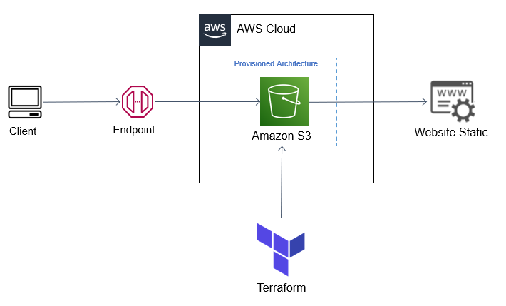
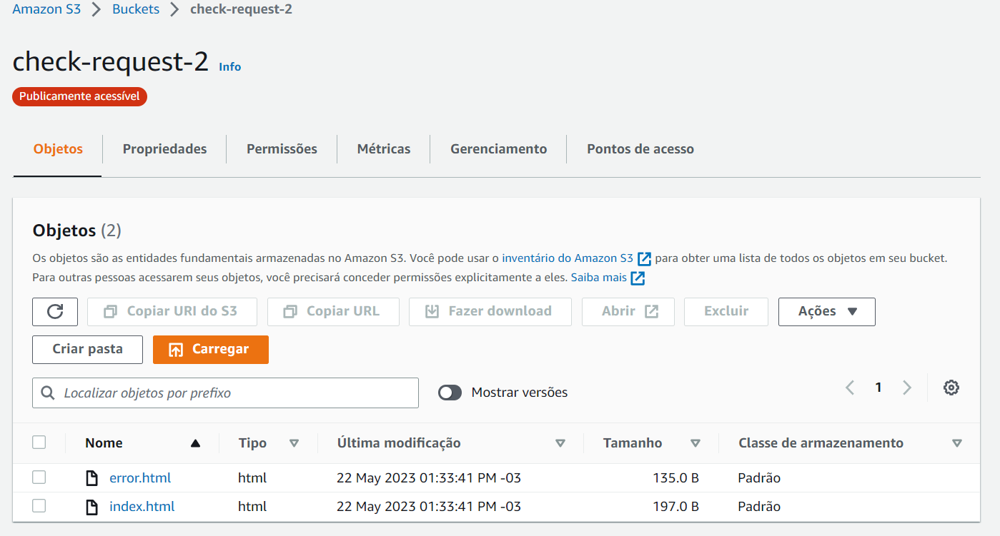
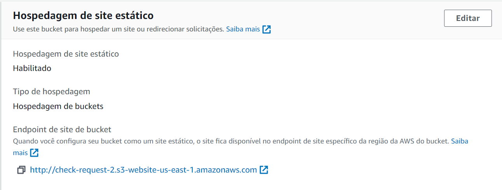
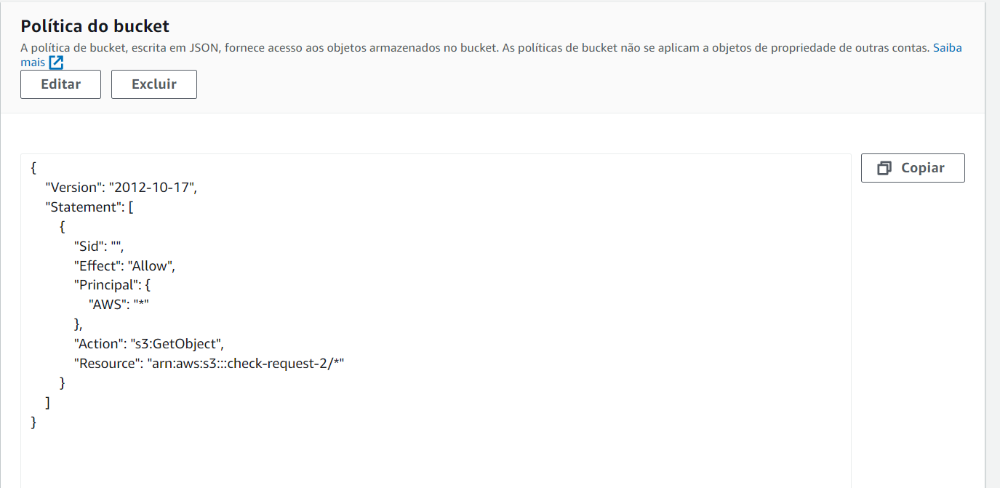
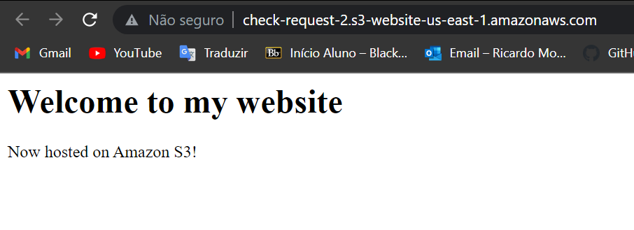

Hospeda Site no S3 ¶
Introdução¶
Caso seu objetivo seja apenas apenas a hospedagem de um site estático e nada mais, esse é o tutorial adequado para você. Vamos utilizar os recursos do terraform para montar nossa infraestrutura.
Observe Abaixo a Arquitetura:
¶
Metodologia¶
- Em primeiro momento, se ainda não clonou, no seu diretório clone o repositório e entre na raiz do repositório. Se clonou, siga para a etapa 2:
- Entre na branch
s3com o comando abaixo: - Na pasta raíz, exporte as credenciais da sua conta da AWS no terminal:
- Modifique o
index.htmle oerror.htmlde acordo com o site estático que deseja gerar para o usuário. - Inicie o ambiente Terraform, carregando as dependências necessárias:
- Aplique e solicite ao terraform que provisione os recursos solicitados na nuvem:
- Por fim, visualize se foi criado corretamente a infraestrutura no console da AWS.
Imagens de Verificação¶




Código¶
O código por completo se encontra no arquivo main.tf. As etapas abaixo explicam o passo a passo para cada recurso criado pelo terraform. Vale ressaltar, esta etapa segue este tutorial da aws
Primeiramente, é definido no provider a região na qual iremos trabalhar, em que no nosso caso é Norte da Virgínia:
Nesta etapa, é definido sua acl, seu nome e seu versionamento.
| main.tf | |
|---|---|
É definido principlamente os arquivos do bucket, como também as suas chaves.
| main.tf | |
|---|---|
Nesta etapa, é configurado os arquivos de índice e de error do seu site. Observe abaixo que possuímos depends_on, logo, esse recurso só é criado depois dos dois primeiros acima.
| main.tf | |
|---|---|
Além disso, é configurado a etapa de acesso público da seguinte maneira:
| main.tf | |
|---|---|
Finalmente, a política é criada logo após o bucket ser configurado: